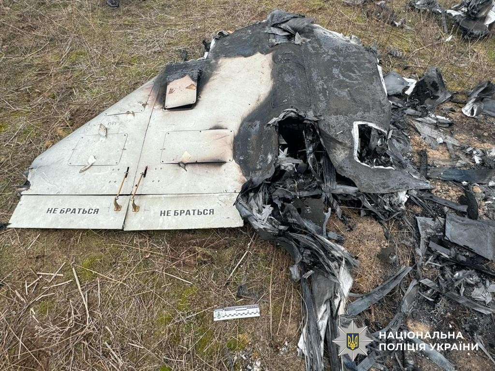

There is an immediate need for better, cheaper, more reliable forms of intercepting One-Way Attack (OWA) drones, especially at the frontline, beyond firing missiles costing $4.2mil (Bureau of Political-Military Affairs, 2026), or telling our service personnel to make do with sticks and stones (Altman, 2023), even if it can work (Funker530 Team, 2023). Since the invention and proliferation of smaller OWA drones, like FPV drones, this has become especially important, as shown by both the Russo-Ukrainian war, and the US-Iran war. The OWA drone attack has 4 distinct phases. These are the major points where the optimal and possible interception methods have forcedly changed. Militaries globally, have developed a 'Throw everything at the wall, including the kitchen sink, and see what works'.
There is an immediate need for better, cheaper, more reliable forms of intercepting OWA drones, especially at the frontline, beyond firing missiles costing $4.2mil (Bureau of Political-Military Affairs, 2026), or telling our service personnel to make do with sticks and stones (Altman, 2023), even if it can work (Funker530 Team, n.d.). Since the invention and proliferation of smaller OWA drones, like FPV drones, this has become especially important, as shown by both the Russo-Ukrainian war, and the US-Iran war. An OWA drone attack milestone, major points where the required interception method has forcedly changed, in order, are: Pre-launch, Post launch, Arrival at the frontline, Attack Dive. From the defender's side, the respective interception milestones, each being a separate major point, are: Pre-emptive interception strikes, Before frontline interception, Frontline interception, and Final point of interception. This article is mostly about using Kinetic Weapons (like bullets, autocannons, drones, and missiles), to intercept OWA drones.
Pre-emptive interception strikes are where you/friendly forces strike OWA drone launch facilities/equipment, storage depos, and other infrastructure needed to carry out successful OWA drone strikes. This is favoured currently as the ideal interception method, and is consistently carried out by every military force, since the invention of OWA drones, from the RAF bombing V1 launch sites in WW2 (MiGFlug Team, 2015), to now, in the Ukrainian-Russo war, using OWA drone strikes to destroy those infrastructure by both sides. On 13th October and during the night of 14th October 2026, units of the Defence Forces of Ukraine struck a number of military facilities belonging to the russian occupiers. In the area of Donetsk, a site used by the enemy for the storage, preparation and launch of attack UAVs was hit. Systematic strikes against such sites are aimed at reducing the russian aggressor’s ability to strike civilian infrastructure across Ukraine. (General Staff of the Armed Forces of Ukraine, 2026). This type of interception is generally highly effective, but depends on accurate intel, and poor position of enemy forces, to be successful. As such, pre-emptive interception strikes is the least common form of interception, and every successful strike is placed in high regard, and is often published.
Before frontline interception, is where the interception takes place after the OWA drone has launched, but before it reaches 5km away from the established defensive frontline, like trenches, and other similar prepared defences. This means that any debris from the interception will land over hostile-controlled territory. At this point, since the OWA drones are generally deep in hostile-controlled territory, the main method of interception is using more conventional missiles like the Pac-3 (Bureau of Political-Military Affairs, 2026), a newer method, interceptor drones, like the STING drone (WildHornet, 2025), as shown in Fig 2. Fig 2, a video showing some succsesful interceptions of OWA drones, by STING drones (WildHornet, 2025).
Frontline Interception, is when the interception of the OWA drone, or anything else being intercepted, takes place within the 15 kilometers of the frontline, as especially in the Transparent battlefield, there isn't a frontline that exists in the same way as most people think, and games show. Instead of clear, WW1/WW2 style frontlines, where it is clear who controls what, it is much more murky, where small squads of troops, hold defensive locations, scatted across a rough line, in key locations. This means that it is easy, and possible, to slip across the frontline, without any resistance in certain locations. As such, the word frontline, now means a 15km area, on both sides, so a total of 30km, where both sides has their forces, intermixed. Behind those 15km, it is clear who controls what, due to constant logistics happening, and other rearline activities. This is also the final point, where a centralized, command level, to an OWA drone can take place, assuming that the OWA drone's target is in the frontline, which this article is doing. Short-ranged air defense is the main solution at this distance, rather than long range missiles, like MANPADS, for example the FIM-92 Stinger (Missile Defense Advocacy Alliance, 2026), and SHORADs, for example the SGT Stout (Feickert and M'Bai, 2026).
The OWA drone has made it through all regular, conventional layers and has started an attack dive on its final target, maybe an MBT, or a couple of squaddies taking cover in an apartment. There is no command level response available, like firing a missile or ordering a drone interception, since the remaining time to intercept is now counted in minutes rather than hours. Instead, this comes down to Hard-Kill Active Protection Systems, like Trophy (KNDS, n.d.), or in the infantry case, giving them shotguns, like the Mossberg 590M shotgun, to engage drones at 25m (British Army, 2026). However, this is an emergency solution, the final resort, and should not be the only widescale plan of interception, but instead as the final fallback option, in case an OWA drone gets through all the other layers of the Air Defence System.
Electronical warfare: This is jamming, counter-jamming, and hacking. Highly expensive, vulnerable, and easily trackable/detectable, while not being reliable. Technically unlimited ammunition, but easily damaged or destroyed, and preventing this, is no small ask when you are talking about making something like a radar bulletproof (Active protection systems: Protecting armour in the drone & missile era, 2026). Laser interception, (also known as Directed Energy Weapons, or as High-Energy Laser (HEL) (DiMascio, Feickert and Sayler, 2024)): Theoretically infinite ammunition, however, has a slow time to kill each target, with one of the fastest only achieving 20 per minute (Electro Optic Systems, 2025), vs the 20mm M61A1 Gatling Gun ability to achieve 4,500 kills per minute, assuming that every shot kills at the max fire rate (General Dynamics Ordnance and Tactical Systems, 2025), due to lasers needing time to burn, and maintaining a singular point on a target, and not benefiting from near misses, with fragmentation effects. This is possible, but extremely hard to achieve, especially when missiles and drones can carry their own countermeasures, like smoke, which disrupts Directed Energy Weapons (DiMascio, Feickert and Sayler, 2024).